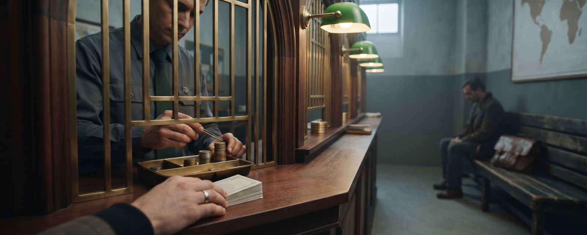

The Exchange Bureau. A wrapper that runs whichever of four external analyzers you flag over one file or directory, and prints what they report, in sections.
The README usage line is a placeholder naming neither target nor flag; the real invocation is the one above. Bandit runs recursively with JSON output, pylint with JSON output, and flake8 plainly. Results are printed section by section and saved when a report file is named.
Option
What it does
filepath
The file or directory to hand to the selected tools. Required. The README parameter list omits it; the code requires it.
--language
Default python. The README list gives this No description provided; the help text in main.py describes it.
--use-bandit / --use-flake8
Select bandit or flake8 for this run.
--use-pylint / --use-pyre
Select pylint or pyre for this run.
--report-file
Save the sectioned results to a file.

The bureau at work: the changing is done by the house, on its own instruments.
The name promises an act the code does not perform
No implicit type conversion specific check is performed. That sentence is the parser’s own description in main.py, and this site repeats it plainly: conversion is the act in the theme’s picture, not an act of the code.
JavaScript and PHP analysis is not implemented. Choosing either language stops the run at exit 1 in main, so the placeholder functions for those languages are never reached from the command line at all.
What the tool reports is what the four external analyzers report; it adds no check of its own over their output.
Requirements
Python, plus the four external analyzers listed in the requirements file (bandit, flake8, pylint, and pyre-check, each 1.0.0 or later), each invoked only when its flag is passed.